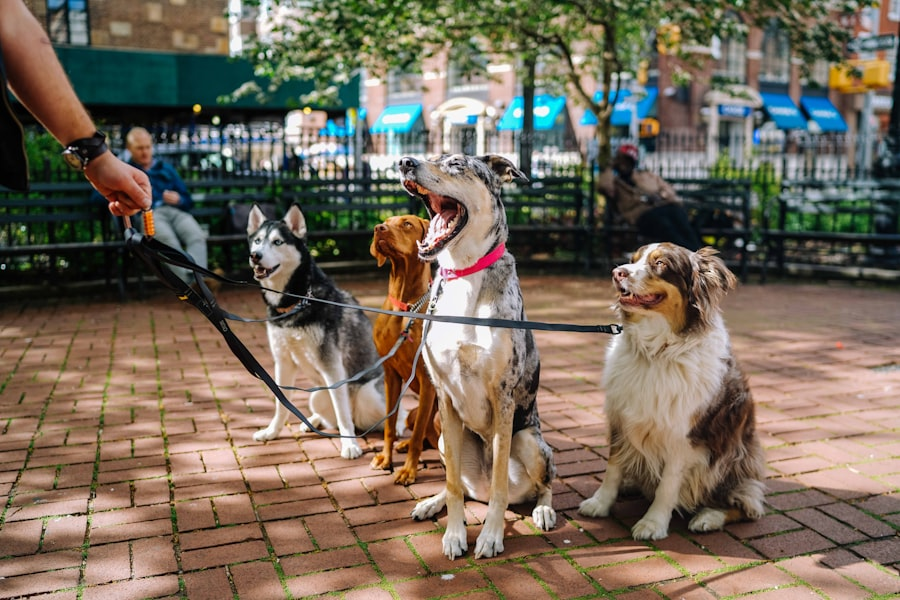
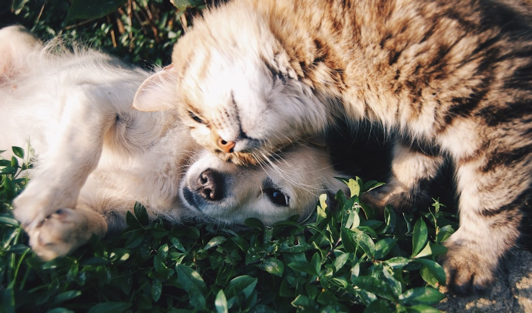

checklist
오늘의 케어
매일 반복되는 약·식사·물·배변·산책을 등록하면 오늘 할 일이 홈에 표시돼요. 완료 항목은 체크만 하면 끝.
약 먹는 시간, 식사, 물, 배변, 산책, 병원 일정까지.
매일 반복되는 케어를 한곳에 모아
놓치는 일 없이 챙길 수 있어요.
"말 못하는 아이의 신호를 놓치고 싶지 않으니까요"
"오늘 좀 기운이 없는데…
병원에 가야 할까?"

"아침 약 먹였던가?
또 헷갈리네…"
"병원 기록이 여기저기
흩어져 있어요"

"다음 진료 날짜를
놓친 적이 있어요"

약·식사·물·배변·체중·산책·병원 일정까지, 오늘 필요한 일을 한 화면에서 확인하고 완료한 항목은 체크만 하면 돼요. 체크한 케어는 자동으로 기록에 저장됩니다.
매일 반복되는 약·식사·물·배변·산책을 등록하면 오늘 할 일이 홈에 표시돼요. 완료 항목은 체크만 하면 끝.
아침 약 08:00, 산책 오후 4:00처럼 반복되는 케어를 루틴으로 등록해두면 매일 자동으로 반영됩니다.
체크한 케어는 시간순으로 자동 저장. 갑작스러운 기침·구토 같은 특이사항은 사진·메모로 남길 수 있어요.
진료일·병원·처방·검사 결과를 한곳에 보관. 다음 진료일까지 관리해 방문 전 필요한 내용을 미리 확인해요.
복약 완료율·체중·식사 변화를 보기 쉽게 정리. 병원 상담 전 아이의 상태를 떠올리는 데 도움을 줘요.
챙겨야 할 케어 시간과 다음 진료일이 다가오면 알림으로 알려드려 빠뜨리는 일이 없어요.
등록하고, 체크하고, 확인하면 끝.
아이 정보와 복약·식사·산책 일정을 한 번 등록해 두세요.
오늘 할 케어를 홈에서 체크하면 자동으로 기록 완료.
쌓인 기록과 리포트로 아이의 건강 변화를 살펴보세요.

※ 1차 서비스에서는 보호자 1명과 반려견 1마리 관리부터 제공합니다.
질병을 판단하거나 치료를 안내하는 서비스가 아닙니다. 아이의 이상 증상이 지속되거나 걱정되는 변화가 있다면 반드시 동물병원에 상담하세요.
오늘 해야 할 케어부터 병원 기록, 리포트까지 하나의 흐름으로 연결해 보세요.
PetCare+ 시작하기 arrow_forward우리 아이의 하루 케어, 이제 한눈에 챙기세요.